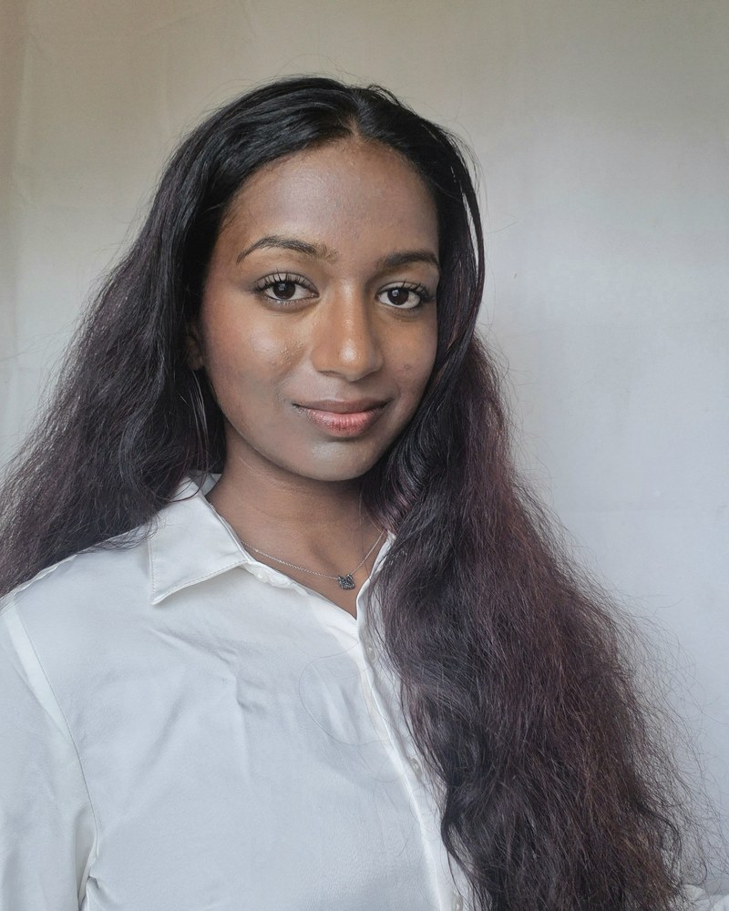

About
I'm a Computer Science student at Farmingdale State College with a minor in Data Science, and I care about building products that are as thoughtful in their design as they are in their engineering.
Outside of coursework, I'm an Adobe Student Ambassador running workshops for students on campus, and I've worked as a product designer with Develop For Good, leading end-to-end design for a healthcare-adjacent nonprofit.
Experience · Since March 2026
Adobe Student Ambassador
Host workshops and creative pop-ups introducing Adobe's tools to 100+ students on campus, partner with student clubs to integrate Adobe Express into their content workflows, and share tutorials and templates across campus social channels as part of a global ambassador network.
Designer
Led end-to-end design for client projects — ideation, wireframing, validation, high-fidelity UI, and handoff — conducting UX research and usability testing to translate client vision into user-centered products.
Field Representative
Lead in-store merchandising for brands including Dell, Intel, Dyson, Google, and HP — managing fixture installs, plan-o-gram compliance, and store relationships independently across multiple locations.
Education
B.S. Computer Science · Data Science Minor
GPA 3.6. Relevant coursework: Data Structures II, Software Engineering.
B.S. Computer Science
T.K. Steele Scholarship, Presidential List, CyberHack Club member.
Skills